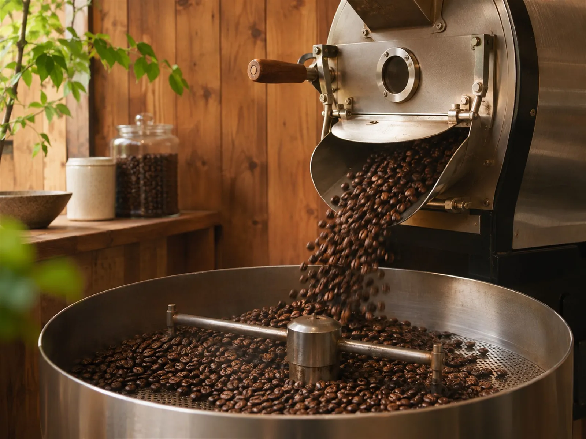

CONCEPT
朝いちばんに焙いて、
話しながら選ぶ
旨かコーヒー カンパネラは、愛知県安城市で、コーヒー豆の自家焙煎と販売をしているお店です。 Instagramには、朝6時台から焙煎機を回す様子が載っています。
Umaka Coffee Campanella
来店された方の感想には、「気さくな店主さんと話しながら豆を選べる」「試飲のコーヒーをいれてくれる」「淹れ方を丁寧に教えてもらえた」という声が並んでいました。
飲みたい時間を気にせず、ゆっくり珈琲をお楽しみください。 公式Instagram（2026年9月10日）より
はじめての方も、話しながら自分に合う豆に出会えるお店です。
